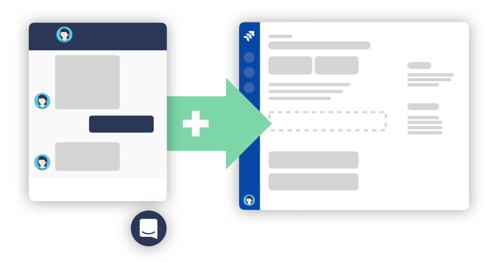
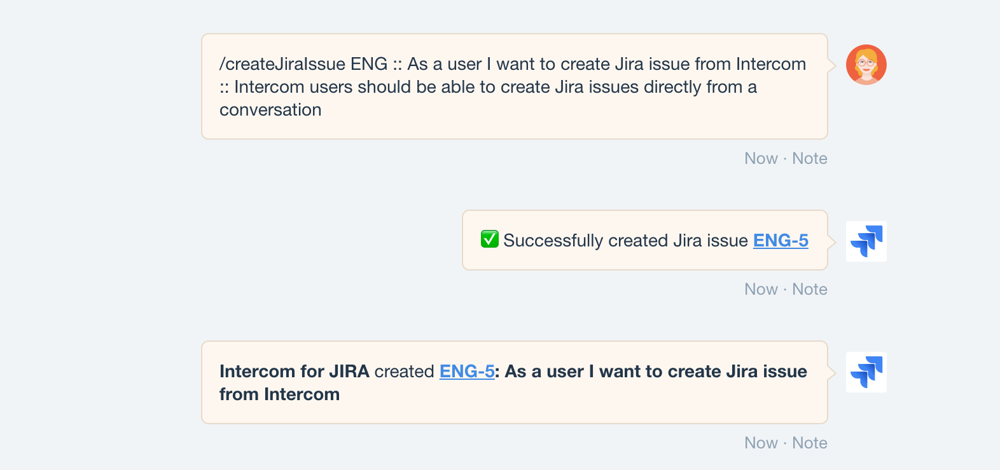
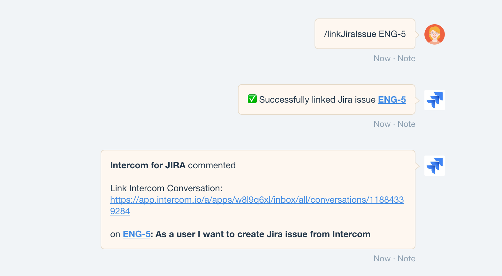

Conversation Actions

Intercom conversation actions allow your Intercom teams to run actions in Jira without having to leave Intercom and without having to have a Jira account. This page walks you through the available conversation actions and illustrates how to use them.
[info] Prerequisites
- Active Intercom subscription or trial
- Enabled conversation actions feature (see Configuration)
This feature is only available if the Intercom App you are connected to has a trial or active subscription.
With conversation actions Intercom users can
- create a Jira issue from an Intercom conversation
- link an existing Jira issue to an Intercom conversation
The following screenshot shows the creation of a Jira issue for a customer request directly from an Intercom conversation. The created issue is automatically linked back to this conversation.

Create Jira Issue from Intercom Conversation
A Jira issue can be created from any Intercom conversation by pasting the following command as a Intercom Note to the conversation:
/createJiraIssue project key :: summary [:: description]
Note that Jira issue description is optional (indicated by [] brackets)
Example
/createJiraIssue IFJ :: As a user I would like to create a Jira issue from Intercom :: Intercom users should be able to create Jira issues without having to have a Jira account
Upon posting a create issue action command Intercom for Jira will create a new issue with a Intercom conversation link in the issue description. Additionally you should see a success message posted back to the conversation.
If you have notifications on issue creation enabled Intercom for Jira will also post a Note back to the conversation with the newly created issue.
[info] Remember when creating Issues from Conversation
- Project key is required
- Description is optional
- Issues can only be created for Jira projects connected to Intercom
- Make sure you post the action command as a Intercom Note
Why do I have to provide the project key in the action command?
A Jira project key has to be provided because Intercom for Jira allows you to connect more than one Jira project to the same Intercom app. In that case it is impossible for us to know on which Jira project you would like to create the issue without the project key.
Link Jira Issue from Intercom Conversation
An existing Jira issue can be easily linked from any Intercom conversation by pasting the following command as a Intercom Note to the conversation:
/linkJiraIssue issue key
Example
/linkJiraIssue IFJ-42
Upon posting a link issue action command Intercom for Jira will post a comment on the specified issue containing a link to the Intercom conversation.
[info] Remember when linking Issues from Conversation
- Only issues of connected Jira projects can be linked
- Make sure you post the action command as a Intercom Note
If you have notifications on issue commented enabled Intercom for Jira will post a Note back to the conversation with the now linked issue.

Conversation Action Command Structure
All conversation action commands share the same structure. All commands are of the form:
/command arg1 :: arg2 :: arg3 :: ... argN
This means each command starts with a slash followed by the command itself followed by a list
of command arguments each separated by two double colon characters (::).